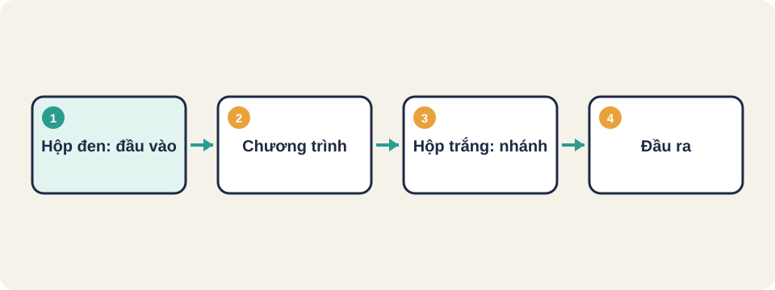
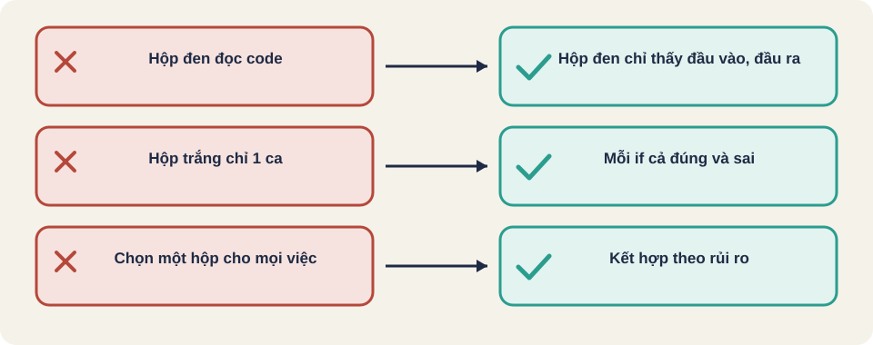

Hình vẽ gốc, dùng để minh họa thứ tự các bước chính của bài.
Kiểm thử hộp đen chỉ nhìn đầu vào và đầu ra. Kiểm thử hộp trắng nhìn vào bên trong để phủ các nhánh.

Hình vẽ gốc, dùng để minh họa thứ tự các bước chính của bài.
Viết ca dựa trên yêu cầu: "nhập 3 số, in số lớn nhất". Không cần biết code dùng if hay ?:.
Ưu điểm: kiểm được đúng điều người dùng cần. Nhược điểm: có thể bỏ sót nhánh ẩn trong code.
Mỗi điều kiện if có hai nhánh: đúng và sai. Độ phủ nhánh là tỉ lệ nhánh đã được chạy qua ít nhất một lần.
Một ca có thể đi qua cả hai nhánh của một if, nhưng vẫn bỏ sót nhánh của if khác.
Thuật ngữ trong slide này: Phủ nhánh (branch coverage): Mức độ phủ mà mỗi nhánh rẽ đã được đi qua. Thường đi cùng hoặc tương đương phủ quyết định.
int max3(int a, int b, int c) {
int m = a;
if (b > m) m = b;
if (c > m) m = c;
return m;
}Để phủ mọi nhánh cần ca làm cả hai if đúng, và ca làm cả hai sai (a là lớn nhất).
Với hàm max3 ở trên, hãy chọn 3 ca để phủ hết các nhánh.
Gợi ý: (1, 2, 3) để b và c thắng; (3, 2, 1) để không if nào làm đổi; (2, 3, 1) để chỉ b thắng.
Tester không cần biết code viết thế nào. Chỉ cần biết đầu vào, đầu ra và yêu cầu. Cách này phù hợp để kiểm chức năng từ góc nhìn người dùng.
Kiến thức chung, chưa đối chiếu nguồn gốc.
Yêu cầu: tuổi từ 18 đến 60 được đăng ký.
Phân vùng:
Không hợp lệ thấp: 17 → từ chối
Hợp lệ: 18 đến 60 → chấp nhận (chọn 35)
Không hợp lệ cao: 61 → từ chối
Biên: 17, 18, 60, 61
Tổng: 4 ca biên + 3 ca phân vùngKiến thức chung, chưa đối chiếu nguồn gốc.
Tester đọc code để biết cần đi qua những đường nào. Mục tiêu là phủ các thành phần của code, bắt đầu từ mức đơn giản rồi tăng dần.
| Mức phủ | Nghĩa | Ví dụ |
|---|---|---|
| Phủ câu lệnh (statement) | Mỗi dòng code chạy ít nhất một lần | Một ca cho mỗi nhánh đều chạy qua |
| Phủ nhánh (branch/decision) | Mỗi if có cả hai kết quả đúng và sai | Ca cho if đúng và ca cho if sai |
| Phủ điều kiện (condition) | Mỗi điều kiện con đúng và sai ít nhất một lần | a > 0 và b > 0 đều được thử cả hai phía |
Kiến thức chung, chưa đối chiếu nguồn gốc.
Thuật ngữ trong slide này: Phủ câu lệnh (statement coverage): Mức độ phủ mà mỗi dòng lệnh đã được chạy ít nhất một lần. · Phủ nhánh (branch coverage): Mức độ phủ mà mỗi nhánh rẽ đã được đi qua. Thường đi cùng hoặc tương đương phủ quyết định.
if (a > 0 && b > 0) {
return 1;
}
return 0;
Ca 1: a = 1, b = 1 → nhánh đúng
Ca 2: a = 0, b = 1 → nhánh sai
Đã phủ câu lệnh và nhánh với 2 ca.Phủ điều kiện cần thêm: a > 0 đúng nhưng b > 0 sai, và ngược lại.
Thuật ngữ trong slide này: Phủ câu lệnh (statement coverage): Mức độ phủ mà mỗi dòng lệnh đã được chạy ít nhất một lần.
| Tiêu chí | Hộp đen | Hộp trắng |
|---|---|---|
| Cần biết code | Không | Có |
| Tìm được | Lỗi yêu cầu và giao diện | Lỗi logic và nhánh chết |
| Ai làm thường xuyên | Tester, QA | Developer, tester kỹ thuật |
| Điểm yếu | Bỏ sót nhánh không có trong yêu cầu | Bỏ sót yêu cầu chưa được code |
Thực tế hay kết hợp: hộp đen để kiểm yêu cầu, hộp trắng để kiểm phần code quan trọng.
Kiến thức chung, chưa đối chiếu nguồn gốc.
Thuật ngữ trong slide này: Hộp đen (black box): Kiểm thử chỉ dựa trên đầu vào và đầu ra, không xem code bên trong. · Hộp trắng (white box): Kiểm thử dựa trên cấu trúc code: các nhánh, câu lệnh, điều kiện. Cần đọc code.
Với hàm nhận điểm từ 0 đến 10 và in "đạt" khi điểm từ 5 trở lên, hãy liệt kê ca phân vùng và ca biên. Hộp đen cần bao nhiêu ca tối thiểu?
Thuật ngữ trong slide này: Hộp đen (black box): Kiểm thử chỉ dựa trên đầu vào và đầu ra, không xem code bên trong.

Thuật ngữ trong slide này: Hộp đen (black box): Kiểm thử chỉ dựa trên đầu vào và đầu ra, không xem code bên trong. · Hộp trắng (white box): Kiểm thử dựa trên cấu trúc code: các nhánh, câu lệnh, điều kiện. Cần đọc code.
Hộp đen (black box)
Hộp trắng (white box)
Phủ câu lệnh (statement coverage)
Phủ nhánh (branch coverage)
Thuật ngữ trong slide này: Hộp đen (black box): Kiểm thử chỉ dựa trên đầu vào và đầu ra, không xem code bên trong. · Hộp trắng (white box): Kiểm thử dựa trên cấu trúc code: các nhánh, câu lệnh, điều kiện. Cần đọc code.
Hộp đen trả lời câu hỏi: người dùng có nhận được điều họ cần không. Hộp trắng trả lời: mọi nhánh trong code có được chạy qua không.
Thuật ngữ trong slide này: Hộp đen (black box): Kiểm thử chỉ dựa trên đầu vào và đầu ra, không xem code bên trong. · Hộp trắng (white box): Kiểm thử dựa trên cấu trúc code: các nhánh, câu lệnh, điều kiện. Cần đọc code.
b > m đúng hoặc sai; c > m đúng hoặc sai.Kiến thức chung, chưa đối chiếu nguồn gốc.
Thuật ngữ trong slide này: Hộp đen (black box): Kiểm thử chỉ dựa trên đầu vào và đầu ra, không xem code bên trong. · Hộp trắng (white box): Kiểm thử dựa trên cấu trúc code: các nhánh, câu lệnh, điều kiện. Cần đọc code.
Hàm tính giảm giá: hộp đen thử các mức giá và xem tiền được giảm đúng không. Hộp trắng xem từng nhánh if và thử cả hai phía của mỗi điều kiện, kể cả điểm biên.
Kiến thức chung, chưa đối chiếu nguồn gốc.
Thuật ngữ trong slide này: Hộp đen (black box): Kiểm thử chỉ dựa trên đầu vào và đầu ra, không xem code bên trong. · Hộp trắng (white box): Kiểm thử dựa trên cấu trúc code: các nhánh, câu lệnh, điều kiện. Cần đọc code.
Nguồn: github.com/PaulWaltersDev/FreeLearningResourcesForSoftwareTesters, mục "Test Design and Execution". Tìm tên tài liệu trong repo để lấy liên kết.